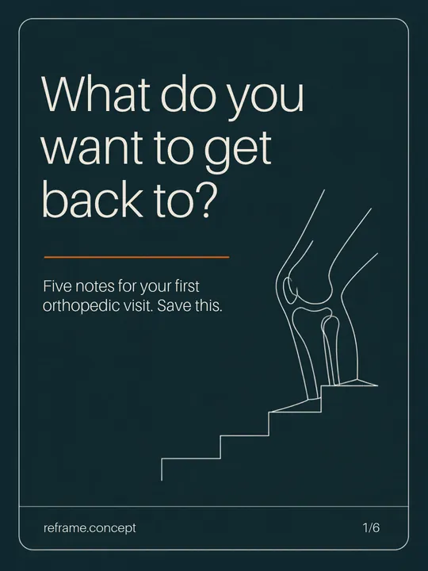
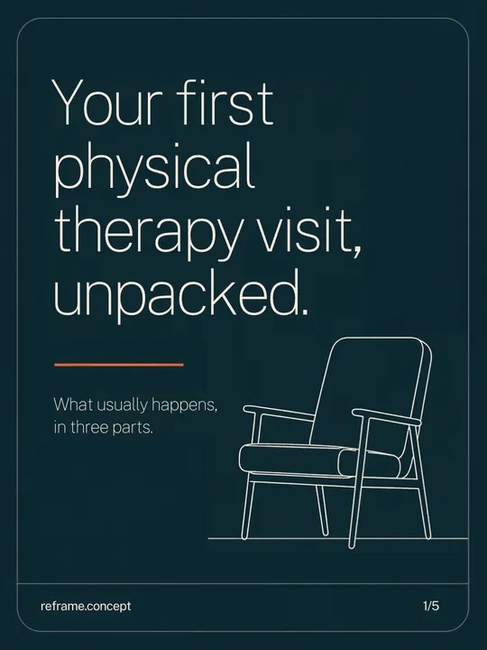
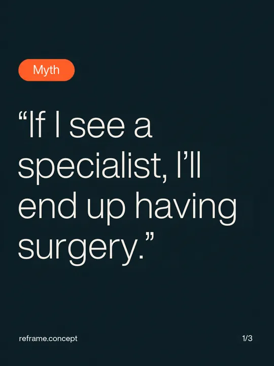

Reframe channels
Follow along
Short checklists, first-visit explainers and referral tips. Every post links to something you can use.
Clinic owner note: Each platform does a different job: saveable checklists on Instagram, longer answers on Facebook, referrer content on LinkedIn, captioned explainers on TikTok. All four are previews of planned accounts; no follower counts or engagement are claimed.
 reframe.concept12 posts
reframe.concept12 posts




 InstagramCarousels to save for the waiting room, from “what do you want to get back to?” to keeping a referral moving.
InstagramCarousels to save for the waiting room, from “what do you want to get back to?” to keeping a referral moving. Reframe OrthopedicsOrthopedic clinic
Reframe OrthopedicsOrthopedic clinic FacebookLonger answers for local patients: the referral question, Westside’s early and late sessions, and the three checklists.
FacebookLonger answers for local patients: the referral question, Westside’s early and late sessions, and the three checklists. LinkedInFor referring offices: what to put in a referral, and how therapy reports back.
LinkedInFor referring offices: what to put in a referral, and how therapy reports back. Stairs hurt? Say this.Your first PT session in 12 seconds
Stairs hurt? Say this.Your first PT session in 12 seconds Is your referral moving?TikTokTwelve-second answers with captions only, from stairs that hurt to what a home plan is.
Is your referral moving?TikTokTwelve-second answers with captions only, from stairs that hurt to what a home plan is.
Free checklists
The checklists behind the posts
Read, print or download. No sign-up.
- First-visit planner · 11 itemsWhat do you want to get back to?Turn “it hurts” into a useful conversation about your day.Read and download
- Rehab preparation pack · 11 itemsYour first therapy visit, unpacked.What to bring and which practical questions to ask before an assessment.Read and download
- Referral handoff guide · 11 itemsHelp the next team pick up the thread.A checklist for the administrative conversation between services.Read and download